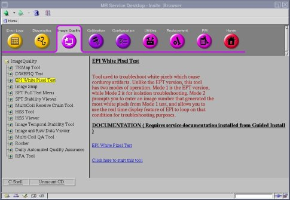
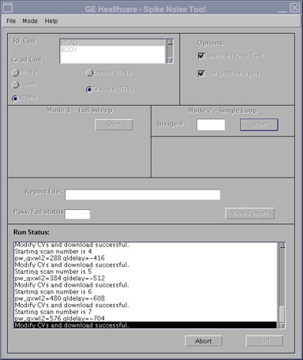
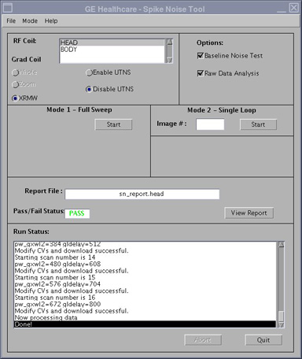
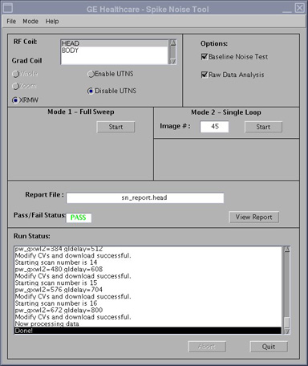

GE Exclusive Use Only
Direction 5670000, Rev# 1
Optima MR450w 1.5T Service Methods
Module Version 8.0, Version Date 12/9/09
GE Exclusive Use Only |
| Required Persons | Preliminary Reqs | Procedure | Finalization |
|---|---|---|---|
| 1 | Not Applicable | 45 mins | Not Applicable |
This procedure uses echo planar image (EPI) scans and the raw data mode of recon to analyze the raw data for white pixel artifacts. These raw data artifacts can exhibit themselves as corduroy artifacts in images. There are two modes of operation for the EPI White Pixel Test.
Mode 1 creates 48 images while iterating on Readout Axis (X, Y, Z), (readout gradient fundamentals frequency), and placement of the data acquisition window over the attack "knee" and decay "knee" of the readout trains positive and negative lobes. In addition, Mode 1 generates various report fields and plot files that can be used to analyze white pixels. Mode 1 has been incorporated in the echo planar test (EPT) test to be run as a single test.
Mode 2 prompts you to enter an image number that generated the most white pixels from the Mode 1 test, and allows you to use the real time display feature of EPI to loop on that condition for troubleshooting purposes.
| Item | Qty | Effectivity | Part# | Manufacturer | |
|---|---|---|---|---|---|
| Service Filler Panel | 2 | 1.5Tw | 5344577 | - | |
| Condition | Reference | Effectivity |
|---|---|---|
Service protocols need to be loaded | - | - |
Service key installed | - | - |
- | - |
Install a service filler panel under each of the two cradle top panels. (See Illustration 1.)
Illustration 1: Service Filler Panels

Determine the White Pixel mode, either Head or Body.
For Head, place an empty head coil on the cradle and connect it.
For Body, remove the head coil and all phantoms from the cradle.
At the keypad on the front magnet enclosure, LANDMARK on the S/I center of the head coil.
Press <MOVE TO SCAN>.
On the MR Service Desktop, start the Service Browser (if not already running). Click the [Image Quality] tab, select EPI White Pixel Test, and click on [Click here to start this tool](see Step ).
Illustration 2: Start EPI White Pixel

A screen called GE Healthcare - Spike Noise Tool appears. Follow Illustration 3 to set the following variables:
Select XRMW and Disable UTNS
For Options: select both Baseline Noise Test and Raw Data Analysis
Illustration 3: EPI White Pixel User Interface

| NOTE: | Before the EPI White Pixel Start Screen appears, a blank window may pop up with the title of GE Healthcare - Spike Noise Tool. You may disregard this blank window. Shortly after, the EPI White Pixel User Interface appears as it is displayed in Illustration 3. |
Click [Start] for the Mode 1 - Full Sweep test. The test runs with a Run Status: displaying at the bottom.
Illustration 4: Test Running

When the test is finished the Pass/Fail Status: displays PASS or FAIL. Click [View Report] to view the file's content. A file called sn_report.body or sn_report.head (depending on which coil is being scanned) is created showing a header file and the white pixel information (if any). If there are no white pixels detected, only the header information appears in the file. These output files are stored on the system in /usr/g/bin.
Illustration 5: Test Finished

To run Mode 2, follow the instructions above to start the tool, with the exception of selecting Mode 2 - Single Loop.
Illustration 6: Mode 2 Screen

When prompted for the image number, enter the image number (1-48) determined from the Mode 1 - Full Sweep test. Illustration 7 appears.
Illustration 7: Mode 2 Scan

| NOTE: | Leave the window open as shown in Illustration 7 and do not select the [OK] button to close it while in Mode 2 or else the test session will end and you will have to restart it. |
Mode 2 runs continuously for approximately four minutes for troubleshooting purposes (provided you do not press the [Pause] key). To repeat the looping process, return to the Scan Desktop and press the [Scan] button again, then use the hard keys to run the test as previously instructed.
For split top head coils, Table 1 indicates how the logical to physical gradients are played out in mode 1 operation. It also indicates which images from Mode 1 are using what scan plane. This is useful information to know when using this tool in Mode 1 or in Mode 2. Typically the frequency encode axis is the one that generates the spike noise because that is the axis that has the high amplitude, high duty cycle Echo Planar Image (EPI) readout train. This is not always the case though as we have seen the phase encode axis cause problems in defective gradient filter boxes. Also, see Illustration 8. If the White Pixel images are displayed in a 3x3, 3x4 or 3x5 format, Axis Specific Gradient Information or scan plane is displayed per column.
| NOTE: | If a specific column has high white pixel values, the problem may be related to a specific gradient. |
Table 1: How The Logical To Physical Gradients Are Played Out In Mode 1
| Head and Body for Base, HighSpeed, EchoSpeed, & Cardiac Systems | |||||
| Image Displayed | Image Plane | Logical Frequency Axis | Logical Phase Axis | Logical Slice Axis | Time Order of Acquisition |
| 1, 4, 7, 10, 13, 16, 19, 22, 25, 28, 31, 34, 37, 40, 43, 46 | Axial | Phys X | Phys Y | Phys Z | 1 |
| 2, 5, 8, 11, 14, 17, 20, 23, 26, 29, 32, 35, 38, 41, 44, 47 | Sagittal | Phys Y | Phys Z | Phys X | 3 |
| 3, 6, 9, 12, 15, 18, 21, 24, 27, 30, 33, 36, 39, 42, 45, 48 | Coronal | Phys Z | Phys X | Phys Y | 2 |
Illustration 8: Gradient Information

Perform a Check Scan to verify proper operation.
Select File Quit.
Remove two Service Filler Panels from under each of the two cradle top panels.
Turn the system over to the customer.